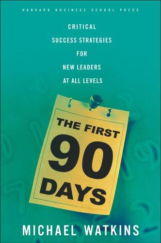

Library › Leadership
The First 90 Days: Proven Strategies for Getting Up to Speed Faster and Smarter — Summary & Key Lessons

The onboarding bible: why most new leaders fail in the first 90 days, and the transition playbook that prevents it.
📖 OPEN THE FULL INTERACTIVE BREAKDOWN →🌐 Read it in Hindi, Hinglish, Gujarati, Tamil & 22 more languages — free, with audio.
💡 The Big Idea
Watkins (INSEAD) codified leadership transitions: the first months decide trajectories, because early mistakes compound and first impressions calcify. The framework: diagnose your situation type (startups, turnarounds, realignments, sustaining success demand different moves), accelerate learning (structured discovery of the business, its culture and politics), match strategy to situation, secure early wins (small visible victories that build credibility), negotiate success with your boss (expectations, resources, style), build your team (evaluating and reshaping reports early), create alliances (influence without authority), achieve alignment and build personal disciplines (avoiding the traps: coming in with 'the answer', staying in your comfort zone, setting unrealistic expectations). Used by half the Fortune 500 as onboarding doctrine; the failures it prevents (the new VP who rebuilt what didn't need rebuilding, the insider promoted into a peer revolt) are the book's permanent exhibits.
🧠 The 8 Key Lessons
Lesson 1: Diagnose the Situation Before Prescribing Anything
The STARS Model
Four situations demand opposite moves: Start-up (build everything), Turnaround (cut fast, decisive), Realignment (politics-heavy, revive what rots), Sustaining success (protect, evolve, don't break). The deadliest transition error: applying turnaround surgery to a realignment (or startup building to a sustaining success), because the medicine kills the patient. Diagnosis before prescription, always, and the diagnosis must include which situation your BOSS thinks you're in.
📖 Example: The book's cases show a star turnaround leader failing at realignment (his slash-and-burn Read More had no enemies to cut, only pride to bruise) and a consensus-builder drowning in a genuine turnaround that needed autocracy for a season. Read the full example →
⚡ Do this: Write which STARS situation you're in (and which your boss believes) on one page this week. Circle the gap between the two answers; that gap is your first real problem.
Lesson 2: Negotiate Success With Your Boss in the First 30 Days
The Five Conversations
Watkins's structured boss-dialogue: situational diagnosis, expectations, resource needs, working style, and personal support. The alignment that takes two hours of awkward conversation prevents the classic failure: working heroically on the wrong mandate for a quarter, then being reviewed against expectations that were never explicit. The discipline: get expectations in writing, revisit at 90 days, and never let the boss's ambiguity survive untested.
📖 Example: A new leader's early 'wins' (reorganizing the sales process) were seen by the CEO as career-limiting empire building because the mandate conversation never happened; the book's counter-case shows a 90-minute expectations meeting redirecting months of misplaced effort. Read the full example →
⚡ Do this: Book the five-conversation meeting with your boss (or board) in the next two weeks. End it with a one-page written summary you send back and ask them to correct.
Lesson 3: Early Wins Must Be Small, Visible, and Aligned
The Momentum Engine
Early wins build credibility but only if chosen well: achievable in 90 days, visible to stakeholders, aligned with the mandate, and using your team (not just your solo heroics). Wins that violate one criterion backfire (too-slow wins never land, too-visible-without-substance reads as PR, solo wins alienate the team you need). The craft: pick 2-3 candidate wins from stakeholder interviews, pressure-test against the four criteria, and sequence them.
📖 Example: A new executive's fast, visible fix of a chronically broken expense process (small stakes, universal pain, team-executed) bought more credibility than her strategy deck: the book's exact template of a well-chosen win. Read the full example →
⚡ Do this: List three candidate early wins (90-day horizon, stakeholder-visible, team-executed). Show the list to two stakeholders this week and let their reactions pick the order.
Lesson 4: Learn the Business Structurally, Not by Drowning
The Accelerated Learning Plan
New leaders default to drinking from the firehose (random meetings, documents, opinions) which produces exhaustion masquerading as knowledge. Watkins prescribes a structured learning plan: past (results, history), present (strategy, people, processes, landmines), future (opportunities, obstacles), gathered through structured interviews (same five questions to every stakeholder, which also maps politics through who says what). The discipline: block learning hours and treat them as immovable as customer meetings.
📖 Example: The five-questions interview tour (what are our biggest challenges, why, what should change, what shouldn't, where's the help you need) consistently surfaces both the business truth and the political map within three weeks. Read the full example →
⚡ Do this: Book the interview tour: ten stakeholders, five identical questions, two weeks. Write the synthesis and the political map (alliances, rivalries, history) for yourself only.
Lesson 5: Reshape the Team Early; Every Day of Delay Is Drift
The First Team
Watkins's 90-day team assessment: competence, judgment, energy, focus, relationships, trust. Keepers get clarity and stakes; misfits exit respectfully but fast, because every month of tolerance taxes the team that IS carrying you. The politics: insiders promoted over you, peers expecting loyalty, early favorites; all of it argues for assessment based on the new mandate, communicated through fair process.
📖 Example: A new leader who delayed a necessary exit 'to be fair' lost two keepers who read the delay as weakness; the counter-case shows an early, respectful exit that paradoxically RAISED team trust in the new boss's standards. Read the full example →
⚡ Do this: Score your team against Watkins's six criteria this month. For the weakest link, set the exit conversation within 60 days with a respectful process, and tell the team your standards out loud.
Lesson 6: Build Alliances Before You Need Them
Influence Without Authority
New leaders command their team but must persuade everyone else (peers, functions, gatekeepers) whose cooperation their success requires. Watkins's alliance-building: map the influence web, identify whose help is critical, invest before asking (support their priorities, share credit), and never burn a gatekeeper (assistants, veterans) whose power exceeds their title. The discipline: treat the first 90 days as a listening-and-deposit period in the influence bank.
📖 Example: A new product head won a cross-functional fight months later because of deposits made in week three (helping marketing hit their number with no strings attached): the book's exact compounding pattern. Read the full example →
⚡ Do this: Map five people whose cooperation you'll need within six months. Make one unprompted deposit with each this month (help, credit, or honest praise where earned).
Lesson 7: Avoid the Transition Traps
The Self-Diagnosis
Watkins's named traps: coming in with 'the answer' (killing learning), staying in your old comfort zone (the sales VP who only manages sales), setting unrealistic expectations (the boom that becomes your baseline), attempting too much (the reorganization in month one), and neglecting horizontal relationships (allergies to peers). The meta-lesson: transitions are about managing YOURSELF as much as the organization; the failure mode is usually the leader's own pattern, not the company's.
📖 Example: Case after case shows the new leader's signature strength becoming the trap: what earned the promotion (decisiveness, technical depth, loyalty) is exactly what the new context punishes when over-applied. Read the full example →
⚡ Do this: Write down the strength that earned you your current role. Then write how over-applying it could fail you here. Ask one honest colleague if they see you doing it already.
Lesson 8: Manage Your Own Transition Infrastructure
Personal Disciplines
The final chapter turns inward: transition stress breaks health, family and judgment; Watkins prescribes boundaries (protected time, support systems, a personal board of advisors), and warns against the 24/7 performance of busyness that impresses nobody who matters. The sustainable leader paces the 90 days like a marathon, because month-six decisions made by a burned-out month-two brain are the quiet killers.
📖 Example: Executives who scheduled weekly reflection (what did I learn, what do I believe now that I didn't at day one) made visibly better month-three decisions than the always-on peers in Watkins's cases. Read the full example →
⚡ Do this: Put a 30-minute weekly transition reflection on your calendar now (learnings, beliefs revised, energy level). Protect two non-work evenings per week as if your month-six decisions depend on them, because they do.
✅ 5-Step Action Plan
- Write which STARS situation you and your boss each believe you're in; close the gap.
- Run the five-conversation alignment meeting with your boss within 30 days.
- Pick 2-3 early wins (90-day, visible, team-executed) and sequence them.
- Run the ten-person interview tour with five identical questions in two weeks.
- Score your team on the six criteria; set the exit conversation for the weakest link.
⚠️ When This Doesn't Work
Watkins writes for corporate leadership transitions: founders, external consultants and political appointments need adaptation, and the framework's comprehensiveness can read as checklist-ism if applied without judgment. Cases are anonymized composites (the method's evidence base is practitioner experience more than controlled research). Read it as the standard onboarding doctrine it has become, and apply the STARS diagnosis honestly; most of the book's value collapses if you skip that step.
💀 The Graveyard Proves It
📷 Kodak — They Invented the Thing That Killed Them. Burn: A 130-year empire. Read the full case study →
💬 Best Quotes from The First 90 Days: Proven Strategies for Getting Up to Speed Faster and Smarter
- “The actions you take during your first few months have a major impact on your success or failure.”
- “Securing early wins builds your credibility and creates momentum.”
- “The failure to negotiate with your boss about expectations is the single most common transition mistake.”
Interactive version: mark lessons as read, listen in your language, share quote cards.